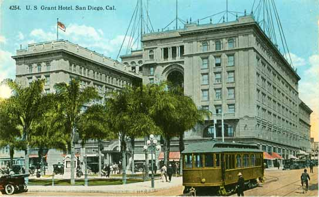

{kind=link}
Downtown
Downtown is the obvious place to stay, given its proximity to both the airport, several freeways, and many major attractions. It's also, well, 'downtown' - meaning it's loud, a bit dirty, and pretty busy. Hotel choices downtown range from the very old (like the US Grant, pictured left) to the hip and modern (the W).
Hotel Circle
Hotel Circle is, shall we say, retro. These are the old-school '50s and '60s style hotels, conveniently located close to all the major freeways. The San Diego Trolley also has several stops nearby. Hotel Circle is ideal if you're looking for slightly cheaper but not sketchy accommodations that are still pretty darn convenient to most of the tourist attractions in town. It is decidedly less walkable, though, so if you're won't have access to a car, this is not the place for you.
Point Loma / Sports Arena
Point Loma is where I generally stay, since most hotels there are a very short cab ride to the airport and are usually pretty darn cheap. With few exceptions, however, they're not particularly nice; if all you're looking for is a place to keep your stuff and catch a few z's between adventures, it's a solid choice.
The exceptions to the general low-quality options can be found on Harbor & Shelter Islands. They're a bit more isolated, right on the water in some cases, with the only downside being they are really close to the airport and can get a bit noisy. Lindbergh Field doesn't allow commercial flights after about 11 PM, though, so it really isn't that noticeable. These hotels generally have pretty good restaurant options as well, and the islands themselves (well, they're actually man-made peninsulas) are nice places for a bike ride or a stroll. Honorable mention here goes to Humphrey's, especially if you're a music lover - during the summer they host a series of concerts right on the water, and you'll almost always see folks sailing their boats up to the venue to listen.
Beaches
The beaches. There are so many, each with a different personality and the accommodations to match. If you're looking for a true beach-bum experience, look into renting one of the many apartments or condos along the Mission Beach boardwalk. The Hotel Del Coronado (known to locals as the Hotel Del, pictured above) is probably the best choice for a special-occasion hotel - honeymoon, birthday, anniversary, whatever.